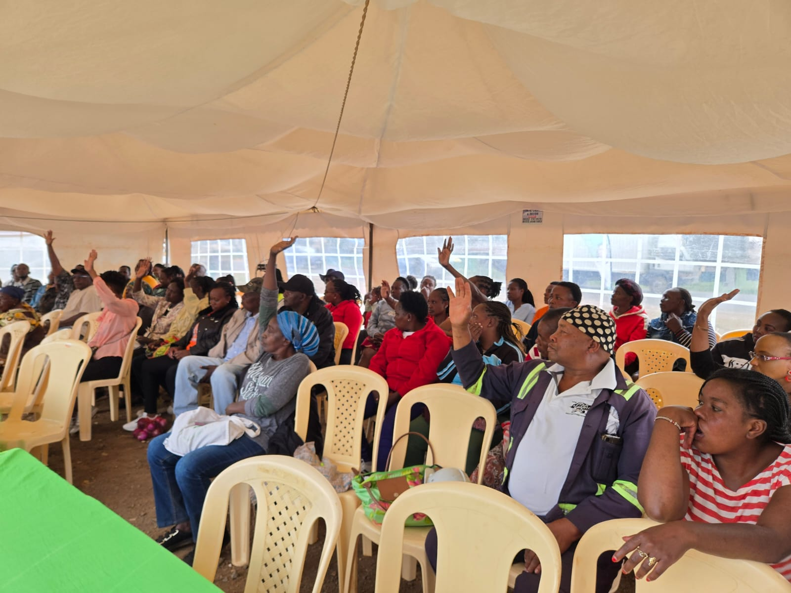

01
Jobs and livelihoods
Seek practical solutions to joblessness and work to expand opportunities for residents to earn a living.
LISTENING. LEARNING. SHOWING UP.
I’m Fredrick Njenga, an aspirant for Ndenderu Ward MCA in 2027. I believe good leadership starts by listening to the people who call this ward home.

To the Ndenderu Ward community: I present myself to you as a simple man, moulded by God to offer leadership and bring honour to our ward.
I will be a voice for those who are unheard, a listener, and a magnet for development. Ndenderu deserves more. We have the numbers and the potential to create solutions to the challenges we face.
These are the key areas where I believe we can make a difference, together. Our agenda is simple: Believe, Plan and Build.
Explore our agenda↓Six priorities for Ndenderu. We will pursue practical solutions with residents, partners and the relevant institutions.
Seek practical solutions to joblessness and work to expand opportunities for residents to earn a living.
Work toward a better environment for traders to operate, grow their businesses and support their families.
Build a leadership structure that gives residents a voice and a place to participate in shaping the ward.
Pursue educational programmes that help residents develop knowledge, skills and opportunities.
Work toward establishing a capital disbursement pool. Funding, eligibility and how it would operate will be developed and shared as the proposal takes shape.
Lobby for well-equipped health facilities that better meet the needs of Ndenderu residents.
A few moments from recent community engagement. Every gathering is a chance to hear what residents care about.



Photos and video are campaign materials. Add captions, locations and dates once confirmed.
Have a thought, question or story to share? Reach the campaign team through the sample contact below. We welcome conversation.
+254 700 000 000 ↗SAMPLE WHATSAPP NUMBER — Replace before publishing. This button is intentionally not connected.